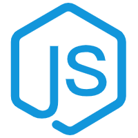

JS自动化测试
Overview - 综述
Q&A - 常见问题
Driver - 基础函数
Element - 元素对象
ElementExt - 元素函数
Environment - 环境变量
Jdbc - 数据库
Touch - 鼠标操作
Logger - 日志
Auto - 模块及函数
Demo - 示例
JS自动化测试 -1.0.0 文档
索引
|
查看全部
目录
automation_testing

automation_testing
#
JS 自动化测试
Github
源码地址
阅读文档